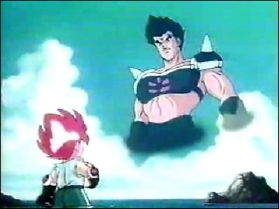
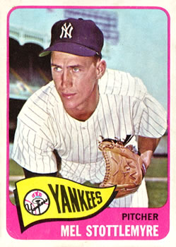

야구의 징크스 —
파울라인을 밟지 않는 이유
야구 중계를 보다 보면, 공격과 수비가 바뀔 때 선수들이 하얀 파울라인을 슬쩍 피해 걷거나 뛰어넘는 모습을 볼 수 있습니다. 왜 그럴까요? 야구계에 오래도록 전해 내려오는 유명한 징크스 이야기입니다.
선(線)을 밟으면 안 된다?
옛날 만화 피구왕 통키에는 주인공 통키의 아빠가 피구를 하다 세상을 떠났다는 설정이 나옵니다. 그래서 "선(금)을 밟아서 그런 것 아니냐"는 우스개가 있었죠. 실제로 피구에서 선을 밟으면 아웃이 되거나 공격권이 넘어갑니다.
야구에도 이와 비슷한 '선'에 관한 재미있는 징크스가 하나 있습니다. 바로 공격과 수비가 교대할 때 파울라인을 밟지 않고 피해서 지나가는 것입니다. 파울라인을 밟으면 불운이 따른다는 미신 때문인데요. 야구계에서 전해 내려오는 가장 오래되고 유명한 징크스 중 하나입니다.

이 징크스는 어디서 시작됐을까?
단순한 재미로 시작됐을 수도 있지만, 많은 선수들이 이를 진지하게 여기며 경기 중 철저히 지킵니다. 기원에는 여러 가지 설이 있습니다.
① 석회가루로 그은 라인이 지워지기 때문에
잔디구장이 흔치 않던 시절에는 석회가루로 파울라인을 그려 놓고 연습했습니다. 이때 라인을 밟으면 선이 지워져 코치나 선배에게 혼이 났다고 합니다. 그런 경험을 하고 자란 선수들이 프로에 진출한 뒤에도 자연스러운 습관처럼 라인을 피하게 되었다는 설입니다.
② 연속 5안타의 악몽
뉴욕 양키스의 전설적인 투수 멜 스토틀마이어는 한 번 일부러 파울라인을 밟고 마운드에 올랐다가 연속 5안타·5실점을 허용했습니다. 이후 그는 두 번 다시 파울라인을 밟지 않았고, 다른 선수들도 그를 따랐다고 합니다. 당대 최고의 선수가 그런 일을 겪었으니, 어떤 강심장 선수가 감히 선을 밟을 수 있었을까요?

③ 한국에도 퍼진 징크스
파울라인 징크스는 동서양을 막론하고 야구 선수들 사이에 널리 퍼져 있습니다. KBO 리그에서도 대부분의 선수가 공수 교대 때 파울라인을 밟지 않고 지나가죠. 새 시즌이 시작되면 선수들의 발걸음을 유심히 지켜보세요.
미신이 경기력에 도움이 될 수도
야구뿐 아니라 모든 스포츠에는 다양한 징크스와 미신이 있습니다. 과학적으로는 의미 없는 행동일지 몰라도, 선수에게는 심리적 안정감과 자신감을 준다는 점에서 중요한 역할을 합니다. 스포츠 심리학에서도 징크스를 긍정적으로 활용하면 경기력 향상에 도움이 될 수 있다는 연구가 적지 않습니다.
- 야구 선수들은 공수 교대 때 파울라인을 밟으면 불운이 온다는 징크스로 라인을 피한다.
- 기원설: 석회 라인이 지워져서, 스토틀마이어의 연속 5안타 일화, 그리고 전 세계로의 확산.
- 미신은 과학적 근거는 약해도 선수에게 심리적 안정과 자신감을 줄 수 있다.
생각해보기 ▸ 나에게도 시험이나 시합 전에 지키는 '나만의 징크스'가 있나요? 그것은 나에게 어떤 도움을 줄까요?